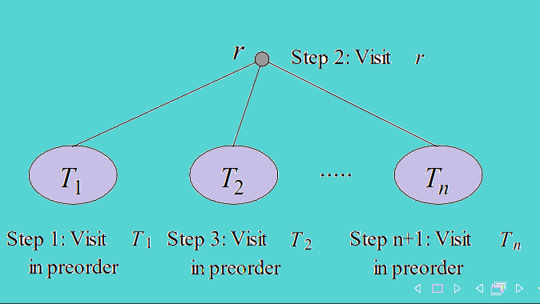
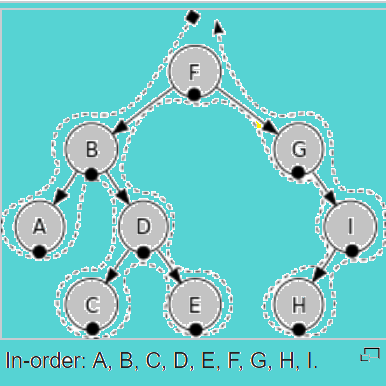

<html>
<head>
<style>
h1
{
color:blue;
text-align:center ;
text-decoration:underline;
font-size:50px;
}
p
{
font-size:30;
font-style:italic;
}
</style>
<title>welcome</title>

</head>
<body bgcolor="#76d7c4" >
<h1 > Inorder </h1>
<p>    Let T be an ordered rooted tree with root r. If T consists only of
r, then r is the inorder traversal of T. Otherwise, suppose that
T1,T2,    ,Tn are the subtrees at r from left to right. The inorder
traversal begins by traversing T1 in inorder, then visiting r. It
continues by traversing T2 in inorder, then T3 in inorder, ..., and
Önally Tn in inorder.
</p>

<br/>
<h2>Psuedo code of Inorder</h2>
<p>procedure inorder (T : ordered rooted tree)
r = root of T
if r is a leaf then list r
else
begin
l := Örst child of r from left to right
T (l) := subtree with l as its root
inorder (T (l))
list r
for each child c of r except for l from left to right
begin
T (c) := subtree with c as its root
inorder (T (c))
end
end</p>
<h2>Algorithm Inorder</h2>
<ol>
<li>  Traverse the left subtree.</li>
<li>Visit the root. </li>
<li> Traverse the right subtree.</li>
</ol>
<h3> Example-</h3>

</body>
</html>